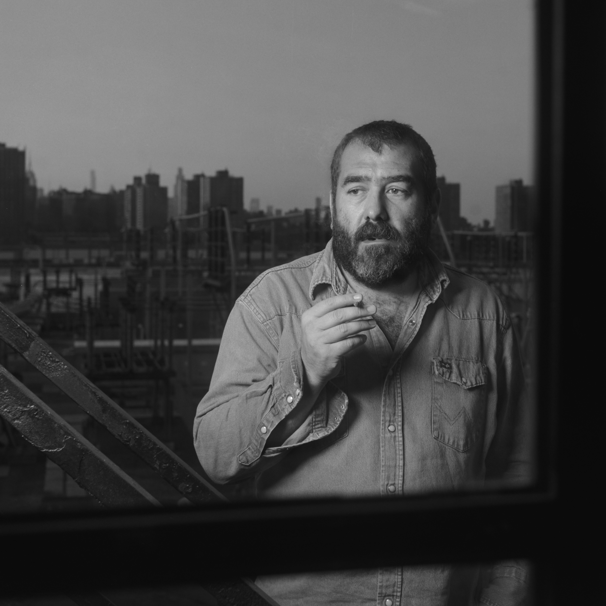
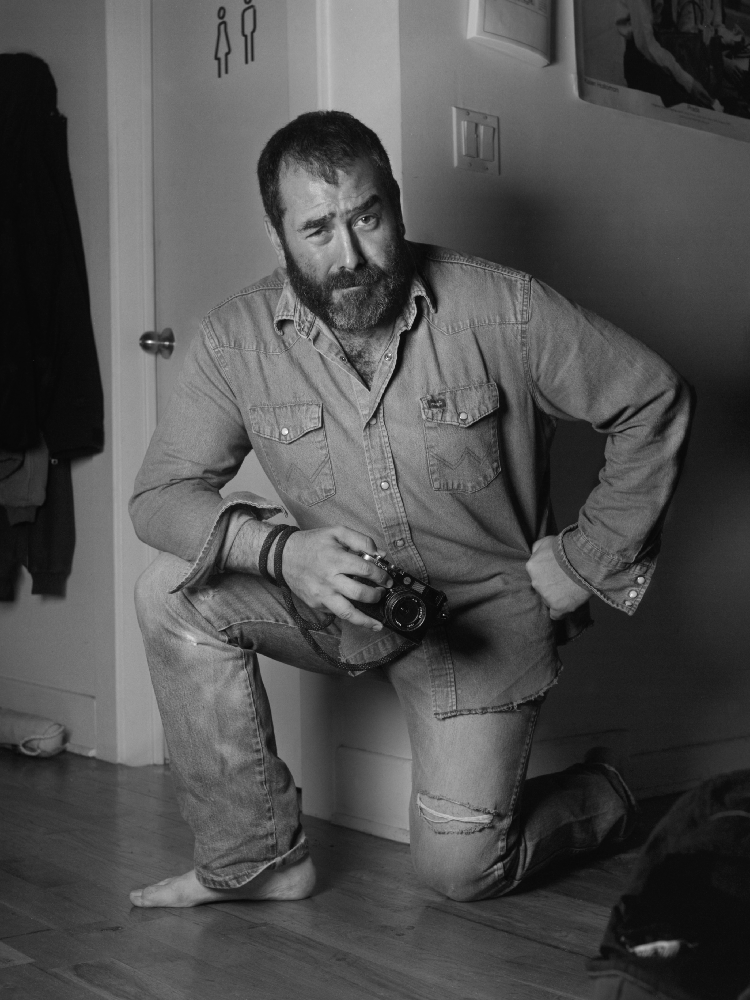
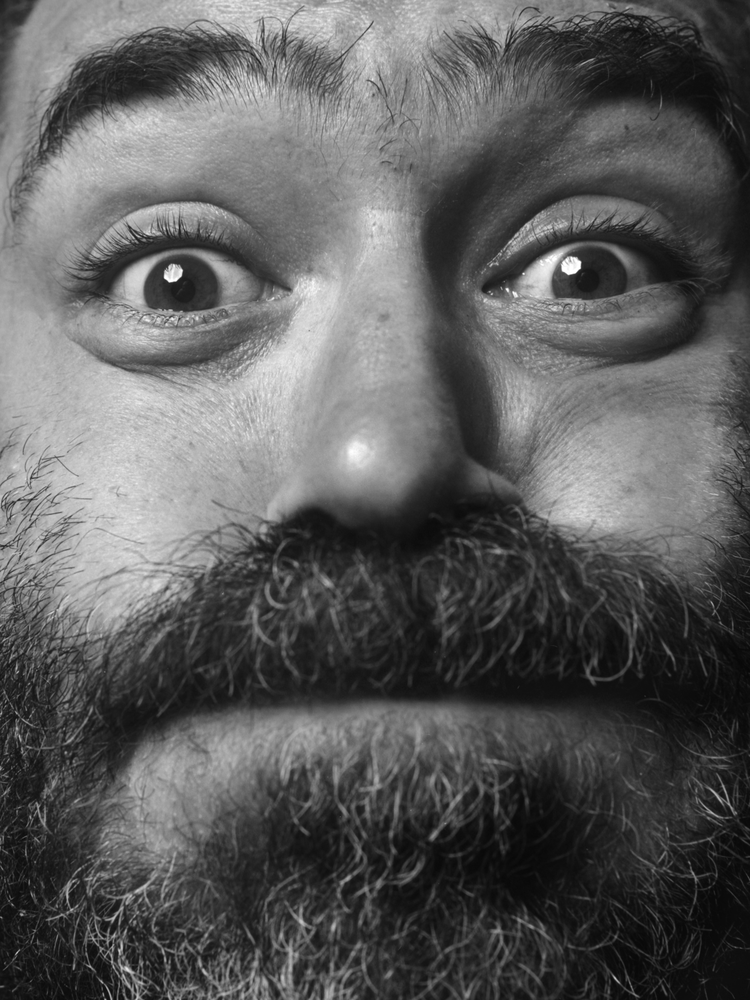
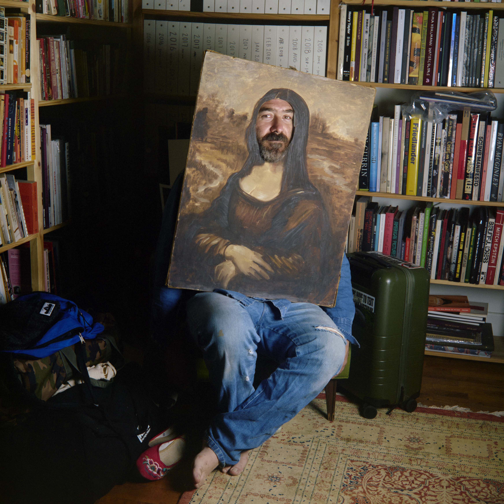

It is a sweltering 95 degrees, and Daniel Arnold is waiting for us outside of his building to ensure we find it. As we shake hands and make introductions, he tells us that people often get routed around the block. We cool our hands on the metal bannister and chat about our days as Daniel leads us upstairs. We enter his airy apartment, adorned with art, relics, streetwear, and lots of books. The space opens upward into lofted ceilings, a beam hung with film, centering on enormous, Venetian-style windows overlooking the East River and a sherbet sky. I want to say that the apartment is like a globe, but stop myself. Where my relationship to attention involves extracting meaning, or narrativizing what I see, Daniel’s seems to be about inhabiting it without needing to define it.
He tells us to sit anywhere we’d like, motioning to chairs, stools, and a bed. I plop down on the floor, where Daniel joins me shortly.
He grew up in Milwaukee, raised by a mother from Westchester and a father from Wisconsin, and I’m curious to know how his upbringing shaped the stories he values. Daniel says that, at forty six, his upbringing is still happening.

“I have been thinking a lot lately about how, although it was a very wholesome, traditional, lovely place, there was something kind of cult-like about it. Only in that it was such a microcosm of a world where my parents didn't really have friends, not because they weren't cool. They were very cool, but like there were so many of us that we just kind of had our own little self-contained world,” He says.
The oldest of six siblings, Daniel remembers realizing around eleven or twelve that there wasn’t enough attention to go around, “Being in that position, in that kind of family, I did have a very early sensitivity to the specialness of small things, like watching my siblings grow up, and amassing this huge library of funny little moments that you could bring back up. That was always the nature of my sense of humor, having this really sort of romantic attention to detail, and also a sensitivity to, I think, the passing of time.“
He connects the observing role of an eldest sibling to his archival impulse;
“Little things that get lost if you don't bother to, if not document them, at least sort of fetishize them.”
Daniel’s many books are in alphabetical order on his bookshelf. He has two copies of The Stranger by Albert Camus. When I ask whether he has duplicates because the collection is a combination of his and his partner’s, he laughs that both copies are actually his, that perhaps he collects too much. He has another shelf with film binders that date back decades. There is also a shelf of art books, though I only take in the colors.
Before photography, Daniel worked as a writer. I ask if photography is another language for the stories he wanted to share through writing. “It was a really organic transition,” he says, one he wasn’t aware of as it occurred. He noticed that it “scratches the same itch.” He explains, “It definitely uses almost all the same tools without the absolute torture of a blank page, and without the isolation of having to like sit and plunk out your thoughts cleverly with personality.” Which, to me, feels less intimidating than taking a photo…
“I think the real breakthrough that distinguishes photography in the realm of all the different art forms as the most immediately accessible is that—especially in New York—you don't need anything. You don't need permission. You don't need anybody's help. You don't need to set anything up. You don't even need an idea. You don't even really need to know how to use a camera. Built into the process, there is this pleasure of learning and evolving. But out the gate, I think it was the same appreciation of detail and humanity that I used as a writer.”
He stretches his legs, “Sorry to put my gross feet in your direction.”
Pointing to my baby blue socks, I say, “I mean I wore socks today because mine are worse.”
“I don’t know, we could have a contest at that” He counters.
Daniel says that at The Fader, where he once wrote features about musicians and bands, everyone got to be an artist: writing, editing, summoning a sort of manic energy from the bountiful creative terrain they had to roam. “Everybody was chasing their own little dream of themselves.” However, due to the urgency of output, he says “Those stories were these sort of breathless little jolts of enthusiasm.” He clarifies, “It's not the kind of storytelling that I think you would want as an antecedent for the pictures that I take, but it was still that kind of romance with mundane details, because very often I'd have a half-hour phone conversation with whoever I was writing about to try to glean some surprising human nuance about them, and it's very hard to do, especially in that exchange where they're trying to be cool."
The act of pretense humanizes someone too, I offer; it feels very vulnerable to notice when someone has constructed a veil, or persona, to be impenetrable, like there’s something fragile beneath it to protect.
“And I think that was kind of the game,” Daniel nods, “to find where they’re dropping the mask in that effort to put something across and control the story. The one thing that comes to mind actually, randomly, was when I talked to Mike Brody…The thing that I was so struck by, that ended up being the anchor of the story, was that he had this physical list that he had written out of his goals for the next five years or so, and it was so ordinary. I think maybe that's tricky to translate to a photograph, but the spirit of it was that same kind of revealing humanity that connects those two worlds.”
Daniel notices the mundane; the strange logic is that being noticed eventually makes it something. I tell him that it appears he’s always used this practice, even during his life as a writer. Part of the craft is that he’d often go into a piece blind, “I can relax, and then you know, make a more human connection outside of whatever thing we're promoting.”
He pauses, “I forget what question I'm answering. Did I answer it? Did I ruin another one?” “No,” I tell him, “It perfectly leads me to my next question.”
There's an interconnected thread of humanity in Daniel's photos. It reminds me of Erich Fromm’s idea about how loving one person extends to all people, the world, eventually (and inevitably) back to oneself. I tell Daniel about the quote, and that part of what draws me to his work is that very sense of connection to other people and their stories. “Does that idea resonate, that in revealing individual stories, you’re also revealing our involvement in the worlds of others?” I ask.
Daniel says it does, but clarifies that storytelling in his work is “more of a retroactive observation.” He says, “It's not like I necessarily set out to tell stories. It's more just like I think the stories are for the editing part of my brain.” He explains that what drives him to shoot is “the faith in ritual.” He says, “It comes from this early period of intense surprise addiction [to photography], during a period where I was epically, prolongedly single. I found something that gives me all the satisfaction of a romantic relationship that I can do by myself, and so I'm good. I'm just gonna dive into this thing.”
Daniel's practice helped him cross from observer to inhabitant. In a city where being immersed in noise can also make that noise feel inaccessible, to look and notice is, in a small way, to become part of that observable world. Daniel picks up on the thought: “I wouldn't have believed, without having experienced myself, how much just going outside and bothering to notice and think about the people around me, changed my experience of the world, of life, and of knowing myself.”

He looks up, “There is something to being so surrounded by everybody, like no matter how rich or poor you are, you're walking down the street and sitting in the subway, and you know every bit of your life, you're exposed to so many different ways of doing it and so many versions of whatever lifestyle, personality, culture. If you don't see yourself in that, and in seeing yourself, feel some kind of intimacy and understanding and connection, something's maybe broken.”
When the city emptied during COVID, Daniel stayed.
"I was outside as much as I possibly could be. It was like I had to go hold the city's hand."
Then, catches himself, "Not that it needed me, of course."
Things have changed, however. “I mean, someone sleeps next to me now.” This shift feeds Daniel’s philosophy of noticing, offering it a new place to land without displacing his romance with the city. Instead, it generates new possibilities that “trickle into every other part of your life,” as he puts it. He tells me, “I still am committed to my wandering, but I find so much more leverage and satisfaction in shooting the intimacy of my home. This is like looking for what you loved and making proof of it.”
It makes me wonder if the camera is more than a tool—a kind of talisman that encourages and protects the discipline of noticing. I tell Daniel that, for me, the tool is writing. It reminds me not to desensitize myself to a world that so easily feels oversaturated.
"It's hard to separate," he explains. "It happens to be that I use a camera to express myself with pictures, but at this point that part of it feels sort of incidental. If I had to give it a particular single virtue, I think it makes me brave. It really helps with my tendency for laziness, or indifference."
Discipline without a guaranteed payoff is what allows Daniel to be brave: "I think in those rare moments where it really works, there is a sort of pocket that you can stand in and be untouched by all the forces working against you. You're like, my God, the whole culture, the whole invention of the world is to distract me, to coax me through the horror of inching toward nonexistence. I think, more now than ever, we're not supposed to notice life happening. “You could really miss everything, and be very nourished in the meantime. But I think it is a shame not to have something that tunes you in.” He says.

In some ways, the lack of payoff is a payoff, inherent to the process through which one evolves, no matter if the shot, recognition, or desired outcome is achieved. Evolution has no objective or peak; each trial creates another facet of experience as we inhabit life. I cite an Aperture interview I’ve read, in which Daniel describes how missing a photograph becomes a kind of joke with himself, because he knows the context of the failure—the angle is wrong, nothing in the frame is within focus—the knowledge becomes an inside joke that only belongs to the person who created it. I ask how his feelings about failure have evolved.
“I think that the relationship to failure is maybe the best part of this sickness. I think there's no way to be a photographer and not spend most of every day failing.”
Daniel shrugs, “I have some good pictures, and it got to a point where I sort of stumbled into having a distinct language where you could recognize a picture as being mine, and then I knew how to take that picture, and I knew how to make a good one. At some point, that becomes boring, easy to copy. It's not yours anymore. It's not interesting anymore.”
There isn’t an option not to stay humble within a longstanding creative evolution, he explains: “I feel like failing is the only way that I can now interest myself. I start almost every job by pulling the person aside, and almost always they look at me like, "Are you out of your fucking mind? But I say, ‘I just want you to know I don't know how to do anything good on purpose, and so we're in this mess together, and it'll be okay and something good will happen, but I don't know how to do it, so can you help me?“
Failure isn’t a novelty that becomes a silver lining once reframed with a positive outlook; it is inherent to the identity of somebody who is moving with the world. “I think that failure, fear of failure, which obviously I still suffer from in many forms and places is how do you ever get over that? It's so paralyzing. It’s so dismantling to be afraid of failure. But I've now had this experience over and over and over again in pretty high stakes, often terrifying circumstances. I think it has probably really changed how I carry myself. Changed my confidence.”
I ask him if tempering expectations helps at all. He responds, “I always feel like an utter failure. I feel humiliated. I feel despondent. I care less, but it stays hard."
I share a thought I had recently, “You have to keep doing it until you’re more immune to the pain of failing, but it’s still scary.” He nods, “Totally, and with pictures, it may be that in a job, in a day, in a month of working, there might be one good picture. I never know that at first because there are emotional attachments, and all these pictures that I want to keep in my little squirrel trove—but yeah, it's hard to do. Pictures are hard. They're very easy, but they're very hard.”
In regard to his earlier mention of retrospective storytelling, I ask Daniel if failure is ever resolved within the editing process. “Have you ever realized you captured something that, at the time you didn't think you did? Does editing ever illuminate what you were actually trying to capture?”
He gently clarifies that a story and narrative isn’t something he intends to create: “I don't think intention is what's revealed. Because I really have decided, for now—maybe forever—that intention is just completely worthless to me, it’s an obstruction and a distraction, and that the less intention I can operate with, the more available I am to actually make something happen, and to discover something.” Though intention is not what is being revealed, there are revelations, Daniel explains. “It’s very cool because very often at work or doing my own thing, it becomes a blackout. I'll come home from work, or from just walking all day, and I’ll have the evening conversation with my girlfriend of ‘what did you see today?’ I'm like, ‘I never know. Like, I have no idea. I'll find out in two days.’”
At the end of the day, Daniel wonders
“What happened to me? Where did I go?”
He explains that sometimes, “The picture is so botched. I’m like, ‘what was I doing here? What did I see? Why did I push the button?’ And I can often find my way back to it. I wouldn't call it intention, but it does happen on many levels at many stages.
Time eventually gives meaning to the moments that he experienced. It doesn’t feel right to refer to it as “capture,” because that relies on choice and possession. The happening of the photo is what eventually gives it a meaning free from imposition.
Daniel edits his photos every month, and tells me about a yearly tradition he looks forward to, “At the end of the year, there's the big edit of all the month edits that get narrowed down—a tight version of the year edit and the tighter version of the tight edit. That is kind of the antidote to the problem of having a hard time impressing myself day-to-day, losing faith in the daily ritual. I have all of these longer game edits that aren't thoughtful. They're chronological.”
Through archiving his work, he maintains a devotion to noticing, trusting that just looking will lead him to discover that something has happened.
“There's something here that I couldn't have done on purpose, that I didn't know I was doing until it was done, and that's a reason to keep going. That's a reason to go and thrash against the brick wall out there every day, and come home be like, who am I kidding?”
After talking editing and archiving, meaning-making to and from failure, what Daniel wants is simple: "What can I get away with? How close can I get to life? Capture it, and capture it without interrupting it.” He doesn't need proof that something is there before he shoots. "I just want it like how it is."
Daniel looks toward the water, reflecting on two decades of camaraderie with the camera. "You stay exactly where you started and keep toiling away. It doesn't make my life feel shiny or special. It doesn't make me feel purposeful or powerful.”
He contrasts it with the current Instagram photography ecosystem, which he describes feeling like a “fast-forward portal” to success, “I don't know, maybe some people are having that experience. For me, it’s like, you stay exactly where you started, and it just gets harder and harder, and you keep hacking away at the same thing that you've hacked away at for 20 years, with extraordinarily diminishing returns. I'm so emboldened to fail.”
